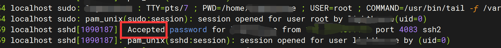
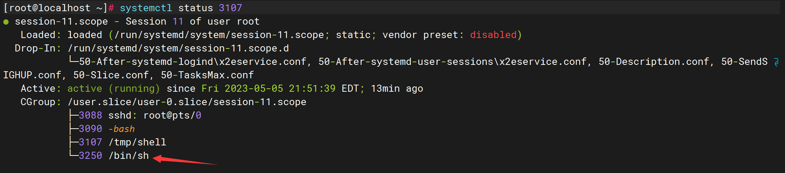
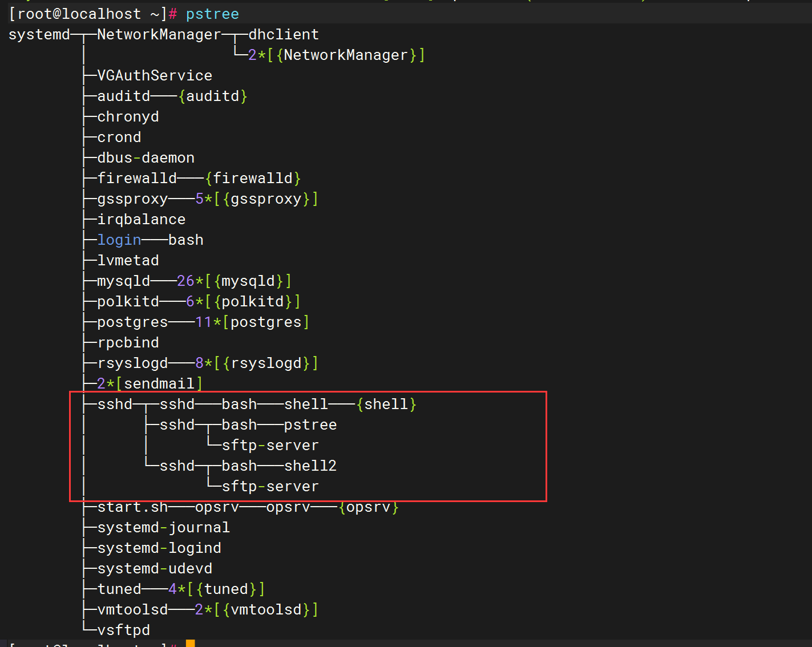
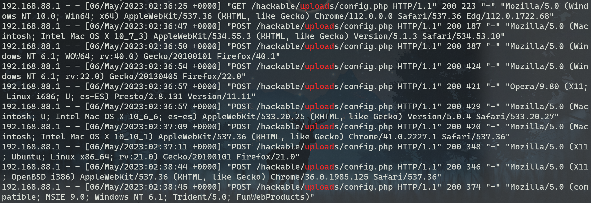

SSH登陆排查
先排查是否存在可疑的ssh连接进程
1
2
| # 列出存在22的端口连接信息（IP、端口、PID、程序名等）
netstat -antpl | grep 22
|
若发现可疑的连接信息，则记录其IP，并通过微步在线X情报社区查询是否存在相关情报。
使用以下命令筛选出可疑IP的登陆日志情况：
1
2
3
4
5
6
7
8
9
10
11
12
| # 查看ssh登陆成功日志/var/log/wtmp
last | grep ip
# 查看ssh登陆失败日志/var/log/btmp
lastb | grep ip
# 可以通过以下参数过滤日志 last和lastb参数一致
# 显示最近10条登录失败日志
lastb -n 10 | grep ip
# 显示从2021年1月1日 晚上8点后的登陆失败日志
lastb -s "2021-01-01 20:00:00" | grep ip
# 显示直到2021年1月1日 晚上8点前的登陆失败日志
lastb -t "2021-01-01 20:00:00" | grep ip
# 以上两个参数结合客查询一个时间范围内的日志信息
|
不过当攻击者使用ssh -T root@127.0.0.1 /bin/bash -i命令登陆时，last和lastb是不会记录到日志中去的，此时我们需要通过以下命令查询所有登陆日志。
1
2
| # 查看所有登陆成功和登陆失败的日志信息
sudo cat /var/log/auth.log | grep ip | grep -E "Accepted|Failed"
|
如果登陆成功则会显示如图下所示

若登陆失败则会有大量的Failed，则表明该攻击者是通过暴力破解获得ssh的账号密码，应及时使用kill -9 pid杀掉相关进程。
后门程序排查
当攻击者采用的是正向连接时，可以通过以下netstat -antlp进行排查

找出可疑程序的pid，通过systemctl status pid查看进程的详细信息，可以看到这是通过ssh上传的文件并执行

当攻击者采用的是反向连接时，且服务器也一直不停的更换端口，难以通过netstat -antlp
但可使用以下命令排查相关可疑进程
1
2
| # 递归列出/tmp目录下被打开的文件
lsof +D /tmp
|

拿到pid后可以通过systemctl status pid查看该进程的详细信息，可以看到下图该pid下的一个进程树，即运行了哪些文件

除此之外还可以通过pstree命令查看简单进程树

也可以通过pstree -p显示每个进程的pid
计划任务排查
查看当前用户是否存在可疑的计划任务
1
2
3
4
| # 查看当前用户的计划任务
crontab -l
# 查看指定用户的所有计划任务
crontab -u user -l
|
攻击者也可以通过创建以下sh文件作为crontab隐藏后门
1
| (crontab -l;printf "* * * * * /tmp/shell;\rno crontw_wab for `whoami`%100c\n")|crontab -
|
但crontab隐藏后门可通过以下命令进行查看，若不存在计划任务则没有该文件
1
2
| # 查看指定用户的所有计划任务
cat -A /var/spool/cron/crontabs/root
|
另外开机自启动文件也需要查看
1
2
3
4
| # 列出开机自启动的所有文件
ls -alh /etc/init.d/
# 也可以通过 head 或 tail查看前n项或后n项
ls -alh /etc/init.d/ | tail -n 10
|
历史命令排查

Webshell排查
查看web日志并过滤upload关键字，查看是否存在频繁访问某上传的文件
1
2
| # apache2
cat /var/log/apache2/access.log | grep upload
|

通过以下命令可筛选出web目录下被修改的文件
1
2
3
4
| # 输出当前目录在1天内被改动的文件
find ./ -mtime -1 -type f -print
# 输出当前目录在1天之前被改动的文件
find ./ -mtime +1 -type f -print
|

查看可疑文件内容，是蚁剑生成的php马，密码是shell

从日志中找出第一次访问该文件的上一个记录，找出上传漏洞点

尝试使用对应工具连接，连接成功，保留样本并进行记录，最后清除该一句话木马

新增用户排查
1
2
3
4
5
6
7
8
9
10
11
12
13
14
15
16
17
18
19
20
21
22
23
24
25
26
27
| # 查看查询passwd的修改时间
> ls -l /etc/passwd
-rw-r--r--. 1 root root 1012 Feb 15 2016 /etc/passwd
# 也可以查看shadow文件的修改时间
> ls -l /etc/shadow
-rw-r-----. 1 root shadow 559 Feb 15 2016 /etc/shadow
# 也可以通过stat命令查看passwd文件的多种时间
> stat /etc/passwd
File: '/etc/passwd'
Size: 1012 Blocks: 8 IO Block: 4096 regular file
Device: 34h/52d Inode: 35517180 Links: 1
Access: (0644/-rw-r--r--) Uid: ( 0/ root) Gid: ( 0/ root)
Access: 2016-02-15 10:34:35.000000000 +0000
Modify: 2016-02-15 10:34:35.000000000 +0000
Change: 2016-02-15 10:34:35.000000000 +0000
Birth: 2016-02-15 10:34:35.000000000 +0000
# 也可以通过查看home目录下面的文件创建时间
> ls -l /home
drwx------ 24 user user 4096 Apr 25 10:17 user
# 查询可登录用户
> cat /etc/passwd | awk -F : '{if($7=="/bin/bash") print $1, $7}'
root /bin/bash
user /bin/bash
|